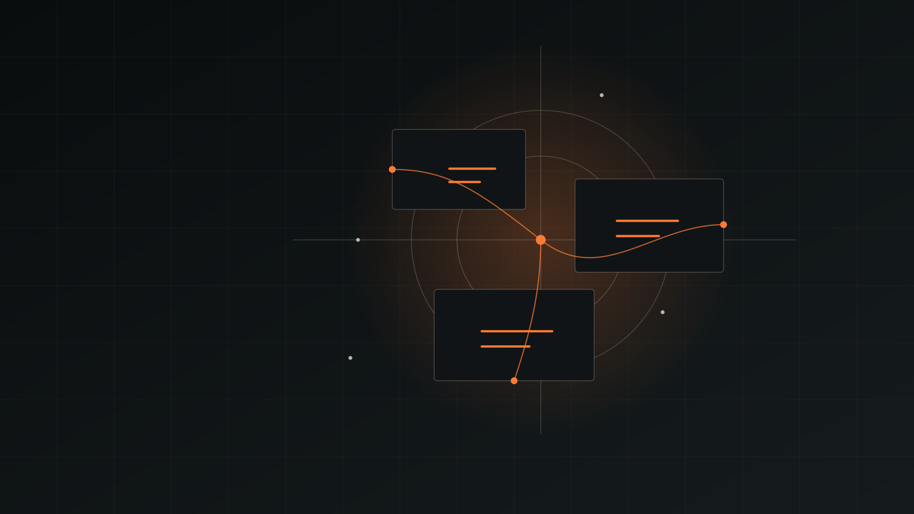

Evidence before interpretation.
The work separates source-backed facts from interpretation and unknowns, then organizes research around decisions rather than volume of information.

Unique Holding / Technology & Intelligence
Unique Holding remains active in energy, petrochemicals, industrial chemicals and global trade. Technology & Intelligence is a major growth direction across specialist research, digital product development, venture systems and content/distribution capabilities.
The technology platform combines one specialist venture, development-stage digital products and two supporting capability systems. The status labels below are deliberate: these areas are not presented as equally mature.
Evidence Axis is a specialist venture within the Unique Holding portfolio, focused on competitive intelligence, B2B SaaS competitive research and decision-oriented research.
The work separates source-backed facts from interpretation and unknowns, then organizes research around decisions rather than volume of information.
The Holding site describes the portfolio relationship only. Evidence Axis keeps its specialist market identity, method and deeper public explanation on its own route and website.
Digital Products is an active development area, not a statement that every product is already operating in market.
Selected product work starts with a defined problem, moves into product and operating development, and is tested before a broader operating status is assigned.
YEKI HAST is a development-stage digital product within the Technology & Intelligence track. Phase 12 records that status only; the deeper product and venture treatment remains on the Portfolio route.
Portfolio / Venture DevelopmentA narrow capability for turning selected business or venture questions into clearer operating choices.
Define the operating question, constraints and decision that need to be resolved.
Structure the business model, route to market and practical assumptions that require testing.
Map the workflows, responsibilities and systems needed to move an initiative from concept toward operation.
This capability is business and venture operating work; it is not financial, legal or investment advice.
Content and distribution are treated as operating capabilities when a venture or business area needs clear positioning, repeatable formats and disciplined publishing workflows.
Translate a product, capability or research output into concrete language for the intended audience.
Create reusable content structures that reduce one-off production and preserve message discipline.
Organize channel, cadence and handoff decisions around the needs of the underlying operating activity.
Unique Holding's industrial business provides operating context and commercial discipline across energy, petrochemicals, industrial chemicals and global trade. Technology & Intelligence extends the group's work into research, decision systems, digital products, business systems and new ventures without replacing the industrial activity.
Start with the operating problem and available evidence.
Separate facts, assumptions, constraints and decisions.
Create the product, system or operating response.
Check the response against practical requirements.
Assign a clearer operating status only when the work supports it.
This is an explanatory working sequence, not a named methodology.
Use the specialist venture, portfolio or corporate contact route according to the question.